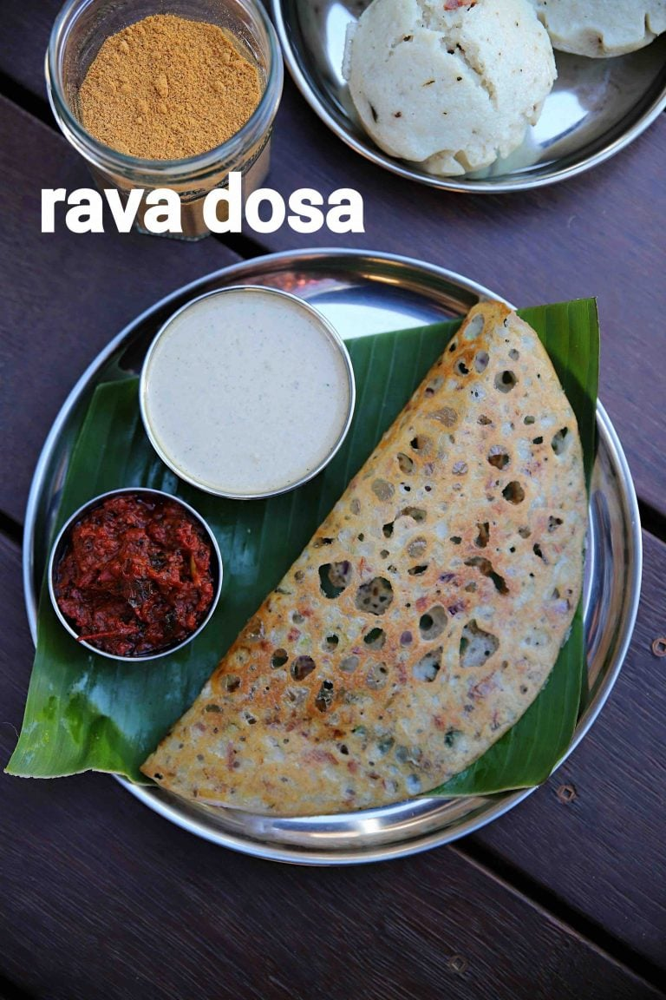

Rava Dosa

Description
Rava dosa (also known as Suji ka Dosa) is a quick and popular variant of dosa from the South Indian cuisine. These are crispy, netted and thin crepes made with semolina (rava or cream of wheat), rice flour, all purpose flour and spices.
These are incredibly easy to make and require no grinding or fermentation, unlike the traditional Dosa Recipe.
It is a popular choice, particularly in metro cities for its unique characteristics. Firstly, it is super crisp and carries a thin flaky texture and gives an enjoyable experience when served with spicy chutney or flavored kurma recipes.
There are many variations to this simple instant dosa recipe, but the texture and taste almost remain the same. Even though this recipe is easy and simple, it needs some simple mandatory tips to be followed for the best results.
Ingredients
- 1/2 cup rava / semolina / suji (coarse)
- 1/2 cup rice flour (fine)
- 1/4 cup maida / all purpose flour
- 1 tbsp curd / yogurt (optional)
- 1 tsp salt
- 2 and 1/2 cup water
- 1 chilli (finely chopped)
- 1 inch ginger (grated)
- 1/2 tsp pepper (crushed)
- 1 tsp cumin / jeera
- few curry leaves (finely chopped)
- 2 tbsp coriander (finely chopped)
- 1 onion (finely chopped)
- 1 and 1/2 water
- oil (for roasting)
Steps
- Firstly, in a large mixing bowl take ½ cup rava, ½ cup rice flour and ¼ cup maida.
- Also add 1 tbsp curd, 1 tsp salt and 2½ cup water.
- Whisk and mix well making sure there are no lumps.
- Further add 1 chilli, 1 inch ginger, ½ tsp pepper, 1 tsp cumin, few curry leaves, 2 tbsp coriander and 1 onion.
- Add 1½ cup water and prepare a watery consistency batter.
- Rest the batter for 20 minutes making sure the rava has absorbed water.
- Mix well making sure the batter is thin watery consistency.
- Now carefully pour the dosa batter over very hot tawa.
- Lower the flame and cook until the dosa turns golden and crisp.
- Finally, fold the dosa and serve rava dosa immediately with tomato chutney or coconut chutney.